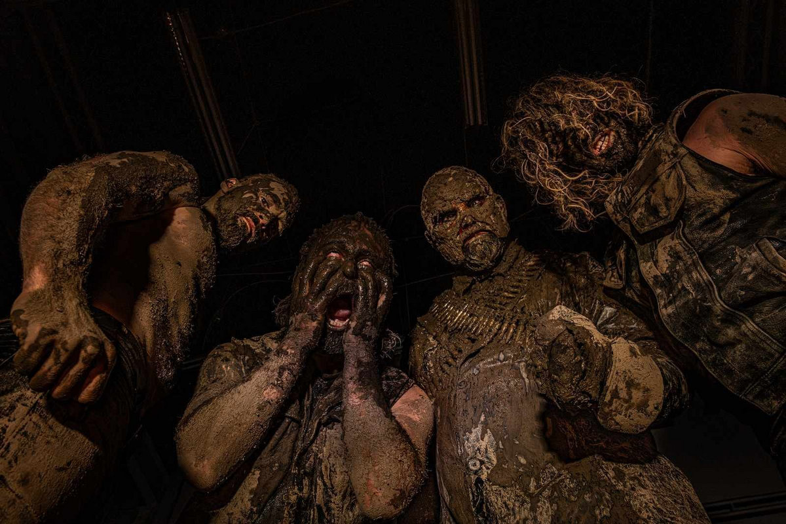

Panzerfaust - The Suns of Perdition – Chapter IV: To Shadow Zion
Over the years, my taste in music has evolved. I now find myself enjoying things that the old me would have disliked or perhaps even hated. This is completely natural; almost every music lover’s preferences shift with time. However, as I’ve explored new sounds, I’ve also developed a habit of fetishizing certain aspects of music—things that aren’t necessarily related to the music’s overall quality.
To give you some examples: I place a lot of importance on closers. Tracks like “The Last Baron,” “Into the Void,” “Apokatastasis Pantôn,” “grimace_smoking_weed.jpeg,” and countless others come to mind instantly. Believe me, I could list them for minutes on end. Beyond that, I’m drawn to elements like album covers, long tracks, elegance, intricate drumming, density, and the fusion of different cultures. While these hold significance, I often overvalue them.
That brings us to the subject of this writing: Panzerfaust. With their final addition to their tetralogy, The Suns of Perdition - Chapter IV: To Shadow Zion—which I’ll refer to simply as To Shadow Zion—the band ticks all of these boxes for me.
The Suns of Perdition is a remarkable series of albums. From the very first part, I’ve witnessed the band’s maturation and evolution, both musically and conceptually. Despite this growth, they have consistently maintained their misanthropic tendencies and thought-provoking lyrical themes. Together, these four albums form a massive and cohesive portrait—something that’s incredibly difficult to achieve in music. While many bands attempt to create interconnected series of albums, they often fail to resonate with the audience. In contrast, Panzerfaust truly does justice to the title The Suns of Perdition.
With the catastrophic To Shadow Zion, Panzerfaust unveils suppressed truths and exposes the fragile reconciliation mankind is caught within. We denied that war was here, even though it had long become the host.
While To Shadow Zion crumbles the earth with its ferocity, it also serves as a perfect culmination of the previous chapters. It carries the unrelenting aggression of Chapter I while striving to capture the atmosphere of Chapter III. Although its predatory nature limits the depth of atmosphere found in Chapter III, the intense instrumentation compensates by conjuring the presence of a doom-monger at your side, constantly reminding you of the inevitable end. Most importantly, it embodies the consistency and impressiveness of Chapter II.
On the track The Damascene Conversions, Panzerfaust achieves one of the year’s standout moments. With the contribution of Ahmet İhvani, they gracefully integrate the bağlama into their music, checking off another of my personal musical fetishes.
To me, this is further evidence that Panzerfaust is far more than just a Kriegsmaschine, Mgła, or Deathspell Omega worship band. While it’s clear they are influenced by these giants, Panzerfaust has carved out a distinctive style of their own. Their ability to incorporate the bağlama so effortlessly into their sound is a testament to their uniqueness. I can’t imagine those other bands attempting this without drastically altering their core sound.
When Panzerfaust draws heavy influence from bands like these, they blend those inspirations brilliantly. For instance, on When Even the Ground is Hostile, the drumming near the end features glancing cymbal work reminiscent of Darkside. However, thanks to the intense build-up beforehand, this similarity feels seamless, avoiding any sense of disturbance while amplifying the dissonance and brutality they’ve carefully crafted.
Conversely, on Occam’s Fucking Razor, they adopt a melodicism akin to Mgła’s style but articulate it in their own distinctive way. The sharp and deafening kick drums, combined with the peculiar drumming, help Panzerfaust craft a rigorous and unrelenting atmosphere that sets them apart. This bass drum sound bears a resemblance to From Mars to Sirius, further enhancing the band’s sludgy, oppressive atmosphere.
Additionally, fuck every platform that censored the track’s name. It doesn’t even target a specific group or individual. Dear Panzerfaust, even in Arcadia, I stand by your side.
That brings us to the grand finale of the last: To Shadow Zion (No Sanctuary). This gratifying closer rewards the journey that preceded it with meticulous, awe-inspiring drumming and a sense of epic grandeur. It re-checks off every box on my personal fetish list, cementing its place as a standout moment in the album.
To Shadow Zion's consistency makes it the strongest entry in the tetralogy. It firmly establishes itself as, by far, the best black metal record of the year. Beyond that, it stands as one of the best metal albums of the year—and even one of the best albums across all genres.
It confidently silences critics who label Panzerfaust a worship band, proving their originality and quality. With further refinement of their vocal melodies and style, and by continuing to build their unique identity, Panzerfaust could craft a masterpiece that resonates far beyond the boundaries of black metal.
Standouts: When Even The Ground is Hostile, The Damascene Conversions, To Shadow Zion (No Sanctuary)
Rating: 8.5/10